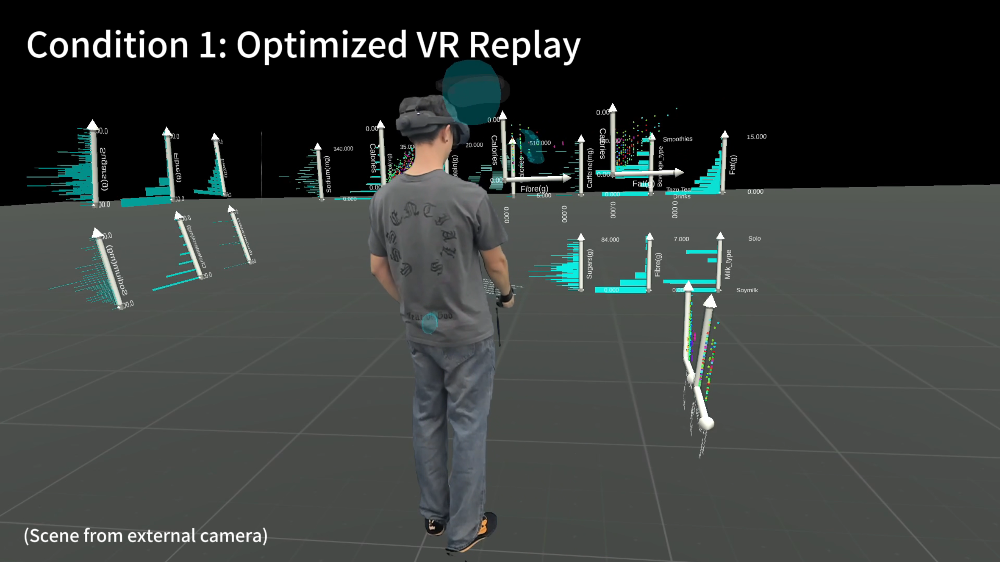
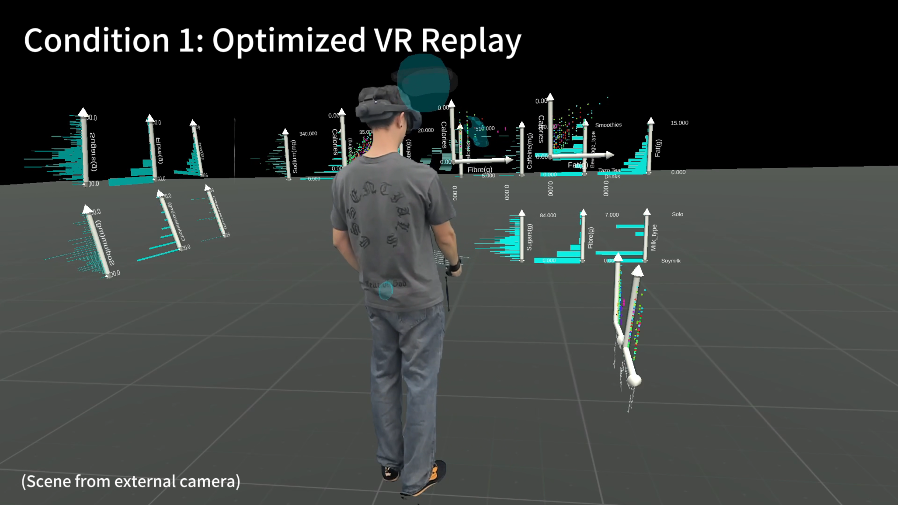
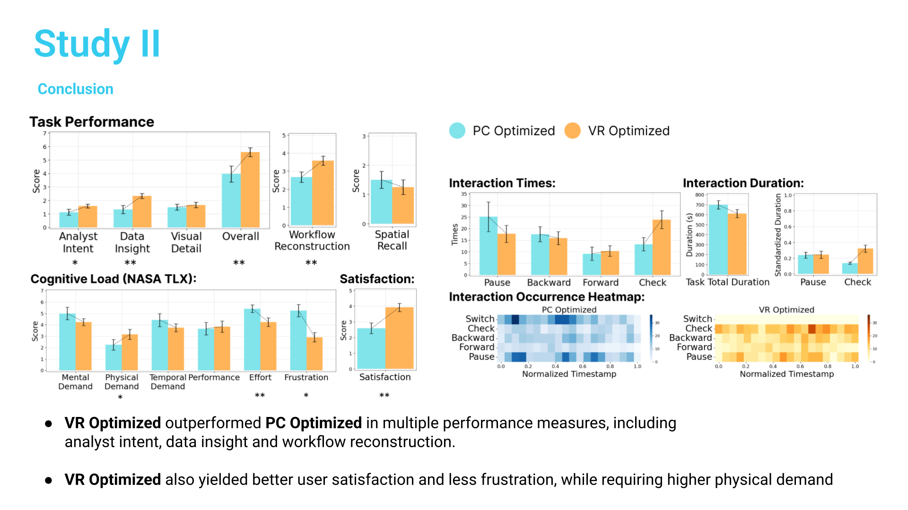
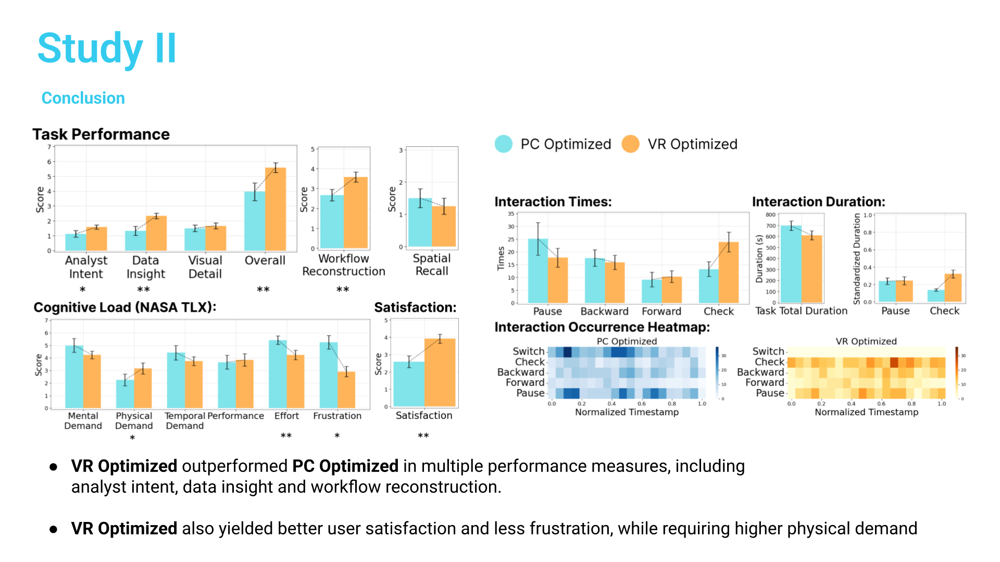

Evaluating Replay Techniques for Asynchronous Collaboration in Immersive Analytics (IEEE VR, 2026)
This project is my first-author work conducted at the IVI Lab at Georgia Tech.
In Immersive Analytics (IA), collaboration can be synchronous (users working together in real time) or asynchronous (participants contributing at different times). A critical challenge in asynchronous collaboration is task handover. For example, you may need to continue from an unfinished data analysis script or report left by a colleague, which requires you to quickly understand and extract useful information.
We propose Data Replay as a tool to support asynchronous collaboration, as it provides rich spatio-temporal information that helps subsequent analysts understand prior workflows. However, in immersive analytics, data replay also introduces unique challenges, such as perceiving complex visualization details and interpreting workflows with strong temporal and spatial dimensions.
Therefore, our research objective is to explore the effectiveness and key design trade-offs of replay in immersive analytics. Based on prior literature, we focus on three aspects:
Viewing platform (PC vs. VR)
Perspective (first-person vs. third-person)
Navigation control (passive vs. active)
The study is divided into two phases:
Phase One: Identify the optimal setup for PC and VR independently.
Phase Two: Compare the optimized setups of both platforms head-to-head.
To control variables, we defined 6 target operations and 3 target visualizations, and combined them with datasets of the same shape to construct 3 specific replays. After watching, participants were asked to answer equally difficult questions and provide subjective and qualitative feedback.
Experimental conditions (Phase One):
1PP Passive — first-person passive view, following the original analyst with no user control.
3PP Passive — third-person passive view, following the analyst’s avatar along a pre-defined camera path.
3PP Active — third-person active view, where users have full navigational freedom in the scene.
Based on these, we moved to Phase Two:
VR: Optimized the best-performing 3PP Active mode.
PC: Proposed a novel Hybrid Passive mode, allowing users to switch between 1PP and 3PP. Both systems were also enhanced with full playback controls (pause, rewind, etc.).
Findings
VR: 3PP Active performed best in both task understanding and workflow reconstruction, with 58% of participants preferring it.
PC: 1PP Passive performed best, effectively guiding visual attention; 3PP Active performed worst, as keyboard and mouse control introduced extra cognitive load.
In the more challenging Phase Two, we found:
VR Optimized outperformed PC on multiple measures, including understanding analyst intent, gaining data insights, and reconstructing workflows. It also led to higher user satisfaction and lower frustration, though with increased physical demand.
Conclusion and Implications
Our study shows that replay design in immersive analytics must match the viewing platform.
In VR, third-person active perspectives should be prioritized to enable interactive sensemaking.
In PC, guiding visual focus and reducing interaction complexity are more important.
This research provides clear design guidelines for asynchronous collaboration in immersive analytics:
1. Enhance information clarity
2. Reduce visual occlusion
3. Support interactive understanding and reasoning
Together, these enable better collaborative experiences across time and users.
Keywords: Virtual Reality, Data Replay, Cross-Device Collaboration, Qualitative User Experience Study, Quantitative User Experience Study
Project Type: Lead Project at Georgia Tech IVI Lab
Duration: 2024.10 - 2025.09
Advisor: Dr. Yalong Yang
Collaborators: Zhengtai Gou, Tao Lu
Main Contributions:
Developed a VR replay system in Unity with C#, enabling cross-device data visualization switching across different perspectives and levels of navigation control. Implemented dynamic avatar blurring when the camera approaches and integrated gaze-based interaction detection for questionnaire UI, supporting three core variables in the user study.
Built a mobile interaction app with C# and Swift to monitor participants' questionnaire behaviors during PC replays. Logged behavior timestamps and synchronized them with the host system in real-time through a UDP server, achieving cross-device behavioral recording.
Leveraged Unity's eye-tracking API and behavioral data logging to conduct usability testing with 24 participants, establishing a quantitative comparison framework for real-time cognitive load between VR and PC platforms.
 

 
